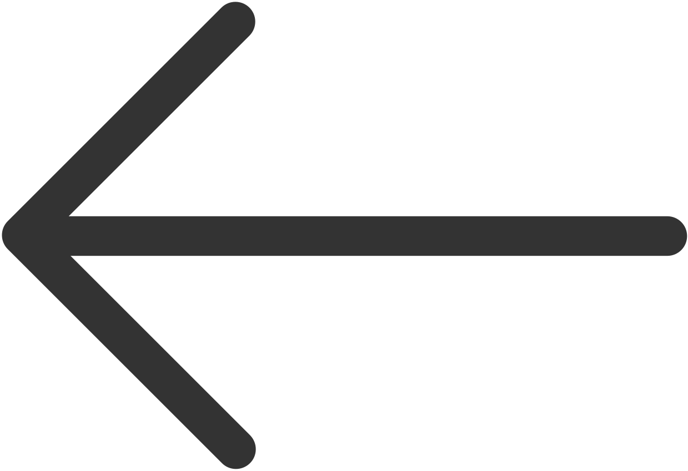
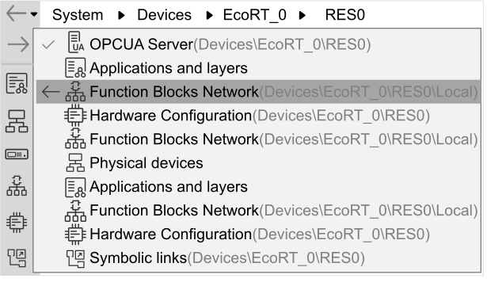
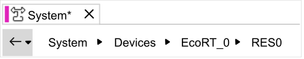
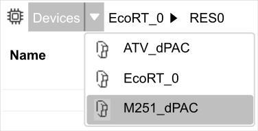

System Editor Overview
The System editor provides quick access to editors and lists.
Open the System editor by either:
-
Double-clicking on the System node, or an application, device or resource node under the System node, in the Solution Explorer pad
-
Clicking on the System File icon
 in the quick access toolbar.
in the quick access toolbar.
Using the Navigation History Buttons
As you display the different editors accessible from within the System editor, EcoStruxure Automation Expert saves a history of which editors you have used. The Navigation History buttons at the top of the toolbar provide quick access to this history.
Each time you click the Previous

icon, the previous editor in the history is displayed.
Each time you click the Next  icon, the next editor in the history is displayed. This button has no effect if the most recently visited editor is still being displayed.
icon, the next editor in the history is displayed. This button has no effect if the most recently visited editor is still being displayed.
Clicking the small drop-down menu icon to the right of the Previous icon displays a list of recently used editors, with the most recently used at the top:

Click any item in the list to display that editor.
Using the Editor Buttons
Editor buttons are displayed down the left edge of the System editor. Click a button to go directly to the corresponding editor.
Click the Expand icon at the bottom of the toolbar to also display the editor names. Click the Collapse icon to show only the icons.
Using Expand and Collapse icons
For more information about Expand and Collapse icons, click the following link Solution Explorer Pad .
-
System:
Logical Devices editor. -
System: Symbolic links editor.
-
System: OPCUA Server editor.
-
System:ASP Asset mapping editor.
-
CAT:Offline Parametrization editor.
-
CAT: OPCUA Server editor.
-
CAT:ASP Asset mapping editor.
-
CAT:ASP Attribute mapping editor.
-
CAT:Engineering Instance CAT mapping editor.
-
CAT:Engineering Instance Attribute mapping editor.
-
CAT uiThis:Offline Parametrization editor.
-
CAT uiThis:OPCUA Server editor.
Using the Breadcrumbs Trail
A breadcrumbs trail is a row of buttons that appears at the top of many of the editors accessible from the System editor:

The breadcrumbs trail:
-
Shows which level of the solution is currently being displayed in the editor. The highest level is on the left, the lowest level is on the right.
-
Lets you quickly navigate between solution levels. For example, click the System button to display lists of applications and devices in the solution, or click RES0 to display the Resource editor with function blocks mapped to a resource.
Click the small arrow between the level buttons to display the available options. For example, clicking the arrow to the right of Devices displays a list of logical devices in the solution:

Click an option to display an item and update the breadcrumbs trail accordingly.